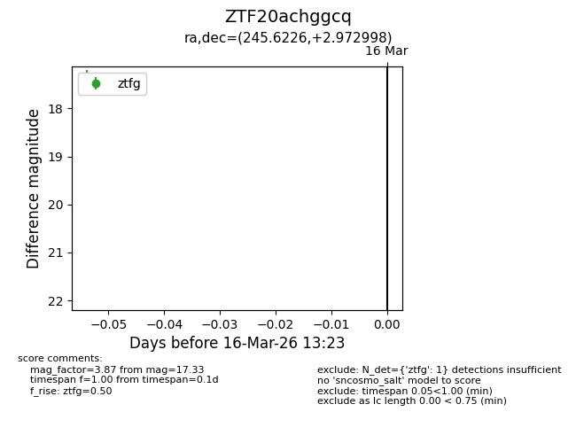
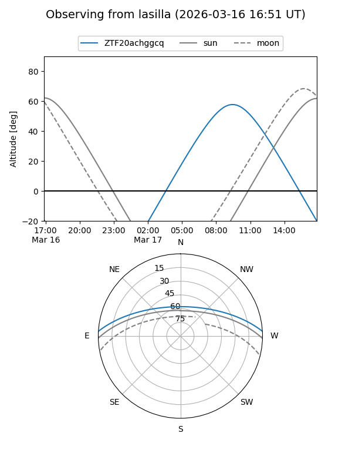
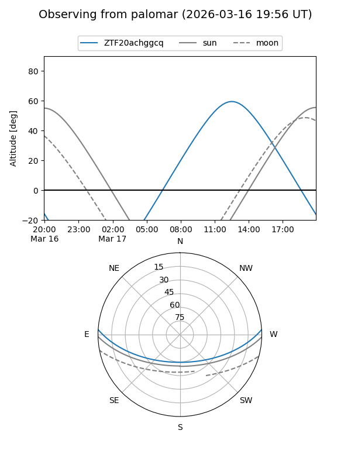
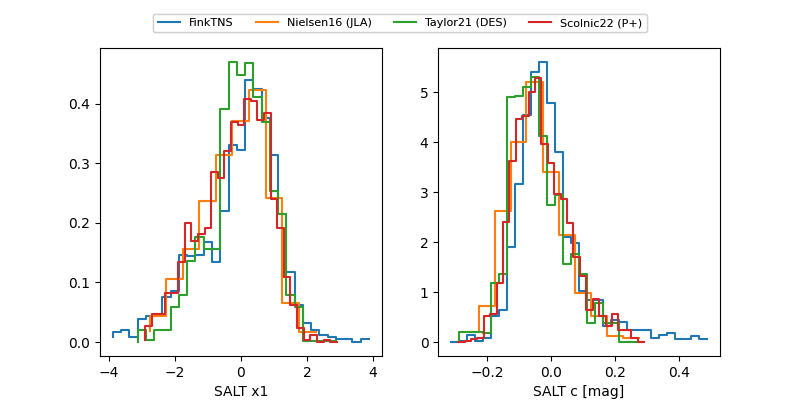

ZTF20achggcq
Target ZTF20achggcq at 2026-03-16 13:25
Aliases and brokers:
FINK: link
Lasair: link
ALeRCE: link
alt names
ZTF20achggcq (ztf,fink_ztf)
Coordinates:
equatorial (ra, dec) = 245.6226,+2.97300
equatorial (HMS+DMS) = 16:22:29.42,+02:58:22.79
galactic (l, b) = (16.8382,+34.15735)
Flags:
Photometry:
last ztfg=17.33
1 ztfg detections
Lightcurve

Visibility


Additional plots
